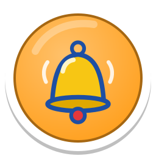
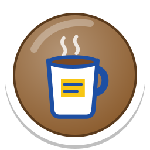
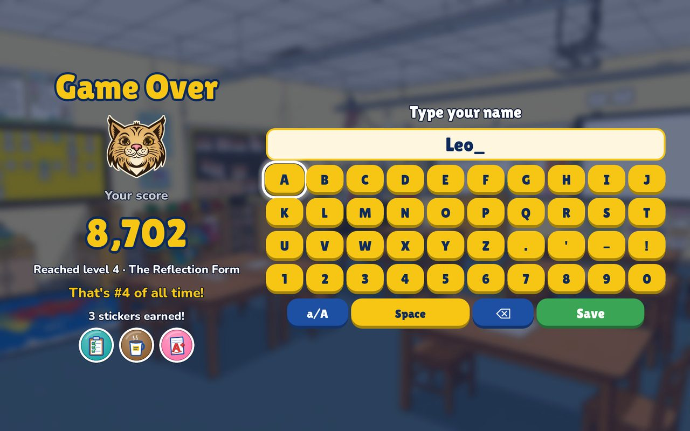
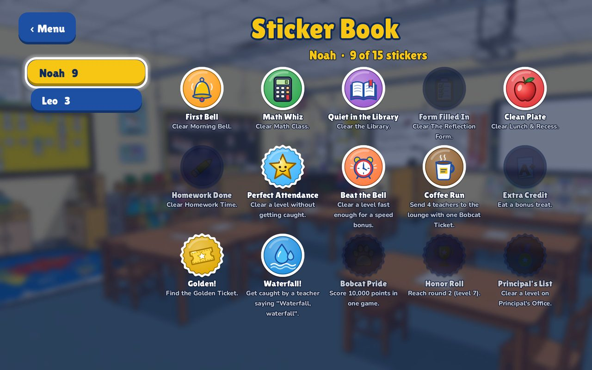

Maze of the Bobcats
Una persecución en un laberinto protagonizada por Bobbie el lince, creada para la máquina arcade de la escuela primaria Bellview en Ashland, Oregón. ¡Cómete los puntos, atrapa los Bobcat Tickets y ve siempre un paso por delante de los maestros!
Para la escuela Bellview Máquina arcade · Joystick y botones




¡Vamos, Bobcats!
Seis laberintos escolares
Morning Bell, Math Class, Library, The Reflection Form, Lunch & Recess y Homework Time: cada uno dibujado como un rincón de la escuela.

Una sorpresa en cada laberinto
Un timbre que manda a los maestros de vuelta a la sala de profesores, números que comer en orden, zonas de silencio donde los maestros no te ven, cáscaras de plátano y más.
Bobcat Tickets
Atrapa un Bobcat Ticket y los maestros corren a la sala de profesores. ¡Atrápalos por el camino para ganar muchos puntos!
Maestros de verdad, como fantasmas simpáticos
La escuela puede añadir a sus propios maestros como fantasmas de dibujos animados, cada uno con una frase divertida cuando te atrapa. Sus imágenes se quedan en la máquina y nunca se publican en internet.

Potenciadores escolares
Un Hall Pass para escabullirte de un maestro, una Recess Bell que los congela, unas Sneakers rapidísimas y Pizza Friday, cuando cada punto vale el doble.
Un álbum de pegatinas
15 pegatinas que coleccionar por cosas divertidas, como terminar un nivel sin que te atrapen. Escribe tu nombre al final de la partida para guardarlas.

Clasificaciones
Las mejores puntuaciones del día, de la semana y de siempre, así que cada día hay un nuevo campeón.

Uno o dos jugadores
Juega solo o con un amigo: por turnos, cada uno con su laberinto, o en equipo en el mismo laberinto.

Hecho para una máquina arcade
Un joystick y grandes botones arcade, cinco niveles de dificultad de Recess a Principal's Office y una demo que se juega sola cuando no hay nadie.
Imágenes del juego






Cómo se juega
Cómete todos los puntos. Mueve a Bobbie con el joystick (o desliza el dedo por la pantalla) y cómete todos los puntos para superar el laberinto. De vez en cuando aparece un premio con puntos extra.
Cuidado con los maestros. Si un maestro atrapa a Bobbie, pierdes una vida. Cada maestro te persigue a su manera, y se vuelven más rápidos y listos a medida que avanzas.
Dale la vuelta. Cómete un Bobcat Ticket en una esquina y los maestros vuelven corriendo a la sala de profesores. Atrápalos por el camino: cada uno seguido vale más.
Supera los seis laberintos y empieza la ronda 2, un poco más rápida. ¿Hasta dónde llegarás?
Maze of the Bobcats se hizo solo para la máquina arcade de la escuela Bellview, así que no se puede descargar. El juego está en inglés.